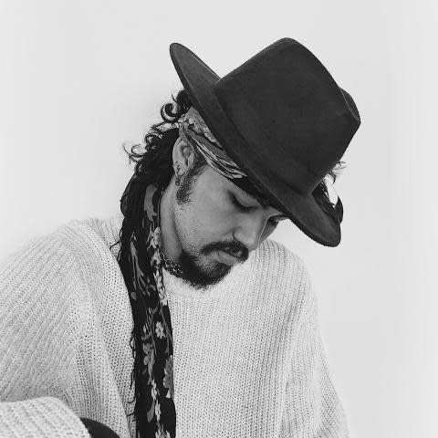
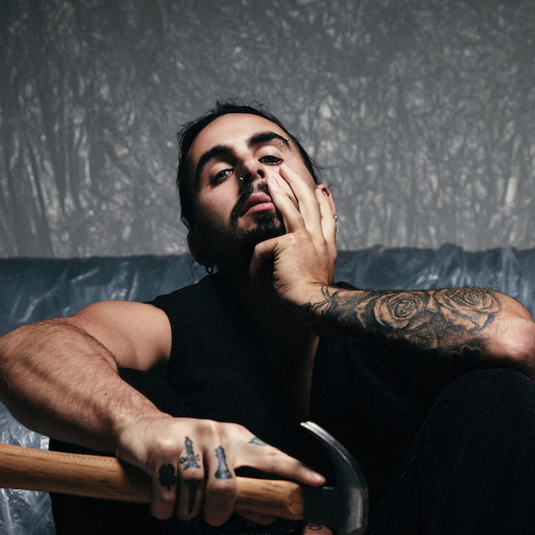
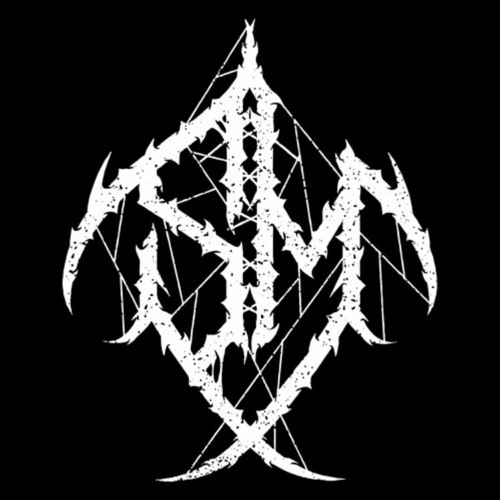

Likes:
Favorite music bands or overall music-type: I don't really have any but these are some artists who are definitely higher up the list than others:
-
Daniel Di Angelo <Favorite song:"Loose face">

-
IVOXYGEN <Favorite song:"Muddy shoes">

-
Two feet <Favorite song:"Flatline">

-
Layto <Favorite song:"Little poor me">

-
Bachyard Ghost <Favorite song:"Thotaphobe">
-
Slowymane <Favorite song:"KARMA!">

-
Bodah Revy <favorite song:"Riverboy">